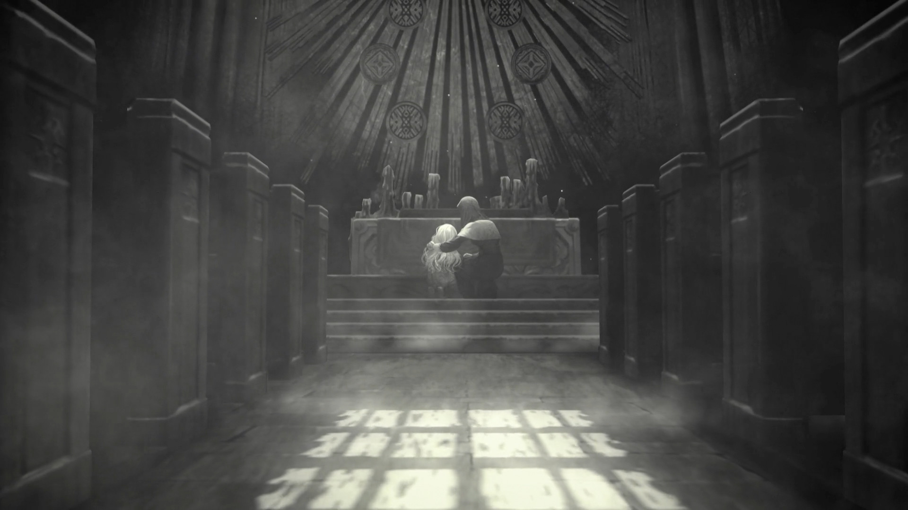

｡ﾟ •┈꒰ა ♡ ໒꒱┈• ｡ﾟ
｡ﾟ •┈꒰ა ♡ ໒꒱┈• ｡ﾟ
( This page is best viewed on a desktop. Zoom out for better experience. )

| Name: | Manas, Coleen Alexis C. |
| Course & Section: | Bachelor of Science in Computer Science | 1-A |
| Student Number: | 251100868 |
════════════════════════════════════════ ° • ✿ • ° ════════════════════════════════════════
A struggling CS student just trying to find her footing in the world.
I like dogs, snacks, drawing, getting lost in my thoughts, and getting adequate sleep.
Oh, I'm also REALLY into video games, which isn't surprising at all for a CS student.
My favorite games consist of
Punishing Gray Raven,
Arcaea,
Guilty Gear Strive,
Blazblue Entropy Effect,
Undertale, and
Hollow Knight.
I’m also currently finishing another solid Metroidvania game called
Ender Lilies, which inspired the layout of this site.
I dislike eggs and ABSOLUTELY DESPISE being sick.